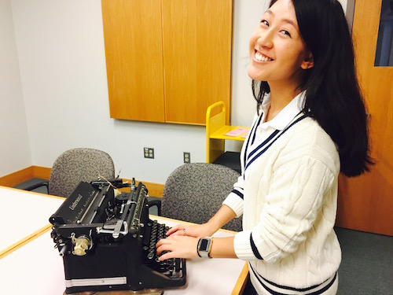

Private Tour of the E.B. White Collection
Look, I am a history buff. I get thrilled when I go to museums and when I found out that Rare and Manuscripts allows you to make appointments to see some of the priceless items that Cornell has I had to take advantage of this.
If you weren’t aware E.B. White is the author of Charlotte’s Web and he is a Cornell graduate. In fact, when I graduate in 2021 it will have been a hundred years since White graduated because he was part of the class of 1921.
Here’s some context. During the first semester of my freshmen year I was walking with my friends back to North Campus and we saw a spider web. I made some remark about how it must be Charlotte’s Web, since I knew White was an alumnus. This got me thinking once I got back home. I was curious on whether or not a big anniversary for Charlotte’s Web would occur while I was at Cornell. Sure enough one was! October 15, 2017 was the 65th Anniversary of Charlotte’s Web being published.
I knew that in Rare and Manuscripts we had the E.B. White Collection, which White donated himself. In it contains the original manuscripts of Charlotte’s Web, the typewriter he used when he worked at The New Yorker, and a book that has his handwritten notes on edits to be made to the grammar book The Elements of Style.
Seeing the original manuscripts for Charlotte’s Web was such a privilege! I remember reading that book with my mom as a kid and now as an adult, I got to see and touch the notes the author took while writing the book! I took note of the fact that he really likes taking notes on yellow paper and in pencil.
The curator I was with told me the history of the collection and how White did a ton of research on spiders. He wanted to portray Charlotte like a real spider, instead of having her be depicted like a “Disney” spider. I learned that White really cared about continuity to the point that he sketched out the farm, so that everything would flow and the description of the farm would make sense.
Rare and Manuscripts has a lot of little treasures there that everyone, whether or not they are a Cornell student, should take advantage of seeing. I’ve seen silly things that range from the socks that Ezra Cornell wore on his wedding day that went to space, to the warm heartfelt letter Ezra Cornell wrote to his granddaughter telling her that she deserves to go to Cornell. To schedule an appointment at Rare and Manuscripts to request to see an item go to this link and make an account!
More people should really take advantage of seeing all of the treasures Cornell has!